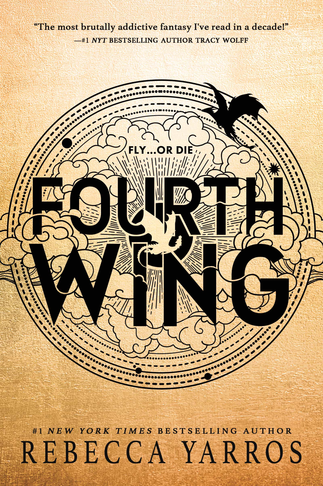

Fourth Wing
by Rebecca Yarros
“I loved it as much as I did it the first time I read it, in fact I loved it more. Picked up on a lot of foreshadowing. Rebecca Yarros is a truly talented writer, the emotions I felt reading it were so genuine, I was fully immersed. The characters and the story are fire.
I loved Xaden and Violet even more, hated Dain with passion, Tairn and Adarana continue to be badasses and Liam...I got no words, I love that guy.”